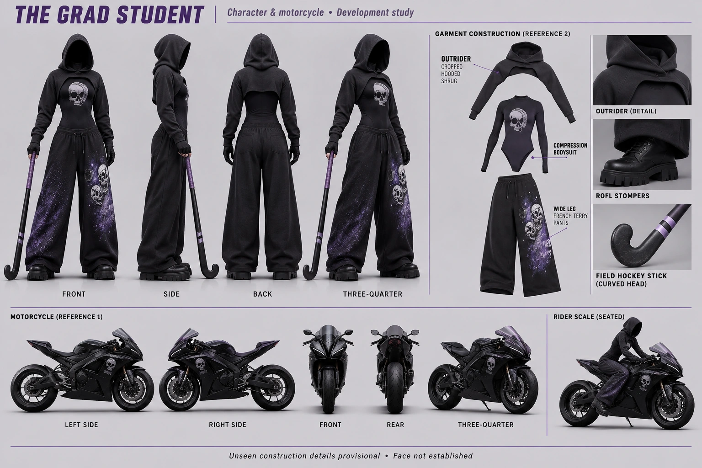

PLAYABLE · REVIEW01
Violet's Revenge
The precinct board-and-card game: an asymmetric escape-versus-capture investigation where legal actions, dice and hidden information are live engine state.
Enter the current Violet's RevengeLOPTR LAB · VIOLET’S REVENGE
An interactive gothic-forensic story.
An American forensics intern in London returns to work after devastating loss and violence. Hunting a network known as the Guilty, Violet builds every accusation on evidence—even as her investigation begins to expose the redactions in her own history.
THE DOOR IS OPEN
Each destination is its own experience. Connections describe creative lineage and shared practice; they do not assert shared canon or a release order.
The precinct board-and-card game: an asymmetric escape-versus-capture investigation where legal actions, dice and hidden information are live engine state.
Enter the current Violet's RevengeExplore the existing browser story, alongside the precinct prototype and other project destinations.
Read the interactive storyA separate fan-made crossover/review experience using the repository's browser story, Float Chess and Float Cards. The review destination is built from the separate source repository; Violet's precinct engine remains separate.
Open A night in Derry on GitHubThe historical root action-horror game. This is distinct from the new precinct rules and from downloading its preserved archive.
Play the originalExplore the feasibility case, production scope, budget assumptions, and ways to participate.
Read the development proposalBrighton Afterglow: a Made Sick guide with optional, fan-written Money Game clues, practical travel context and a Violet's Remembrance route.
Explore Brighton AfterglowBreak the Grid: an independent Loptr Lab systems prototype about institutional pressure, consent, community care and collective redesign. It is not a Violet story or medical simulation.
Read the project sourceA public creative review surface for prototypes and documented decisions. Planned or unverified features are labelled as such.
Read the project surfaceA separate character study exploring identity, interpretation and PIXIE’s chosen forms, from a philosophy graduate student’s reading practice to visual development. Connected creative research, not Violet’s game canon.
Explore the character portfolioSTORY & TREATMENT
Violet's Revenge follows one continuing investigation: evidence accumulates across encounters while Violet's pursuit of procedural certainty begins to expose the redactions in her own history. The public view stays spoiler-light; expanded treatment is optional.
PUBLIC, SPOILER-LIGHT SYNOPSIS
An American forensics intern in London returns to work after devastating loss and violence. Hunting a network known as the Guilty, Violet builds every accusation on evidence—even as her investigation begins to expose the redactions in her own history.
Violet researches outcomes for children whose mothers were killed by domestic violence. After the deaths of her colleague Sophia and Sophia's twin Solomon, Violet buries their unclaimed remains. She survives a subsequent attack and returns under the cover of office duty.
Her investigation follows the Witness, the Clerk, the Undertaker and the Coroner. Each encounter changes the investigative verb: catch a contradiction, navigate a ledger, de-escalate an enforcer and test a room that asserts a false account. Evidence accumulates across the story rather than resetting between encounters.
Her deeper arc concerns the difference between origin and identity, and between procedural authority and self-sovereignty. A redacted personal history gradually becomes part of the case.
SPOILER CONTROL · SEASON 2
Closing Time turns toward the Guardian who raised her. A warm Halloween tradition becomes unsettling when a familiar closing phrase appears outside its ritual context. Violet begins asking whether love and control can coexist.
Editorial basis: owner-supplied Drive documents and the source-derived summary supplied for this review. The originals were reachable as document shells in this environment; no independent full-text retrieval is claimed.
VISUAL DEVELOPMENT
Character and motorcycle development sheet, generated with AI from Dominique’s supplied references. Outrider, ROFL Stompers and the field hockey stick carry through the study. Unseen construction details remain provisional; the face is not established.

THE GRAD STUDENT · PROPOSED GAMEPLAY
Empower yourself through small, achievable tasks: notice, verify, practice, connect and reflect. The Grad Student’s character and lore give compatible games and real-world learning experiences a shared creative home. Proposed experiences remain in development.
PLAYABLE MICRO TASK · FICTIONAL PRACTICE
You are heading to a community evening. A cropped notice is being shared with the claim “The whole venue is closed.” Check what the records actually say, then choose your next step.
All names, times and notices below are invented for this exercise. No real venue or live safety information is represented. No account, tracking, uploads or saved responses. Reloading clears this attempt.
“East entrance closed, 17:00–20:00.”
Fictional shared image. The publisher and remainder of the notice are not visible.
Fictional Community Hall · Facilities desk
Practice record B, revision 2 · issued Tuesday 16:00.
“East entrance closed for maintenance, 17:00–20:00. The evening session remains open. Use the west entrance, where the reception desk will be staffed. Ask reception if you need an accessible route.”
This is a fictional primary notice from the issuing desk. It clarifies access; it does not prove that every route or circumstance is safe.
Step 1 of 4 · Notice
You separated the visible wording from an inference, checked the fuller record and chose an action that respects your boundaries. No person was accused or investigated.
Nothing is submitted here. If you choose, copy the summary and open a public GitHub feedback issue. GitHub sign-in is required to post; do not include private information.
No completed attempts in this page session. These are local practice attempts, not distinct people, retention or project-wide results.
Play from the Grad Student’s first-person perspective, seeing her hands, Outrider sleeves and the tools she uses. A change of form introduces the proposed third-person view, showing the embodied character and movement. The transformed form, camera transition and VR comfort behavior remain design questions, not implemented features. Shared ecosystem origins do not merge this track with Death’s Daughter or Violet’s existing game rules.
The core loop is a manageable action, an observable result and a choice about what comes next. Examples include checking one source, noticing a safe route, trying an adapted movement, setting a boundary or finding a suitable local class. Progress supports agency and everyday confidence; no vigilante role is required.
Developers pursuing the relevant rhythm-game repository can adapt their work into this character and lore. A Beat Saber-like practice incentive is one proposed implementation, not the definition of the whole project. Repository selection and integration require verification before implementation.
Proposed sessions combine repeatable rhythm and coordination practice with a story fragment, a clue to examine and a reflective debrief. Players choose pace and range of movement; progression recognizes controlled timing, consistency and careful decisions. Rest, pause and a lower-intensity or seated alternative remain valid participation. No punitive streaks or story access tied to exercise intensity. The field hockey stick remains her established virtual prop; VR play uses supported controllers, not a real stick or sword.
The intended safe parasocial experience offers familiarity, encouragement and belonging through clearly fictional characters. Writing respects the player’s independence: no claim that a character is a real reciprocal partner, no exclusivity demands, guilt for leaving, forced personal disclosure or affection sold as a reward. Players can pause, skip relational scenes or leave without punishment. These are design commitments to test, not a guarantee of emotional safety.
Real-world learning examples will use public, permissioned or fictionalized material with visible sources and dates. Practice separating an observation from an interpretation, tracing an image to its original context, comparing a public notice with the issuing source, preserving an original record and marking what remains unknown. A missing fact is not evidence of guilt. Scenarios reward corroboration, consent, privacy and proportionate reporting—not identifying, tracking, exposing or confronting real people.
The purpose is to feel more capable being yourself in an urban environment. Proposed choices include noticing a route closure, checking a reliable public update, choosing a well-lit staffed destination, setting a boundary, asking for help and leaving an uncomfortable situation. Success can mean disengaging safely. Movement practice does not establish fighting ability, self-defense competence, clinical benefit or guaranteed protection from harm. In VR, physical clearance, controller straps, reachable pause controls, comfort settings and no forced camera movement take priority; transition options need testing with regular VR players and disabled participants.
WeaponUp is a real-world example of connecting imaginative identity with a movement practice and a community. Players may choose connections beyond the game: brands, coaches, instructors and organizations supporting empowerment, boundaries and appropriate self-defense education. Potential partnerships can offer agreed classes, resources or experiences; none is claimed as signed or endorsed here. Match each activity to the provider’s actual scope: WeaponUp describes non-combat movement, not self-defense instruction. Keep participation voluntary, accessible and transparent about cost, sponsorship and data sharing.
Shared origin and signal connect the ecosystem; each project retains its own story, rules and authority. Developers can contribute a compatible mechanic or experience without rewriting the character’s history. Changes to canon require explicit approval; new adaptations retain their own sources, credits and permissions.
WeaponUp’s public method explanation (accessed November 16, 2026) describes a progressive non-combat movement practice. Its public presentation includes members’ accounts of feeling like fictional protagonists. These support an inspiration about practice and imaginative identification; they do not establish VR gameplay, a safe parasocial design method, independent efficacy or a partnership. Our proposal uses original movement and writing; no WeaponUp classes, sequences, branding or Beat Saber assets are imported.
PROJECT EVOLUTION
This map describes the requested creative lineage and shared design practices. It is not proof of chronology, shared canon or runtime integration.
WATERFALL · ILLUSTRATIVE ONLY
This is an illustrative funding and recoupment model for discussion only. No deal, funding commitment, clearance, distribution agreement or guild calculation is represented here.
Make the order visible before the numbers become persuasive: where development support might come from, what production and accessibility cost, which collection deductions apply under an assumed agreement, and what recoups before continuing development.
Change an input to see the proposed order. These are not approved commercial terms.
Illustrative order: gross → proposed deductions → costs recouped → remaining pool. Contracts would define the actual priority, shares, residuals, royalties, taxes and reporting.
BUILD IN PUBLIC
Playable evidence exists today: a vanilla precinct prototype, the archived root experience, and separate review destinations. This is a scoped conversation about rights, scope, accessibility and a financially transparent agreement.
VISUAL DEVELOPMENT
AI-assisted development study from owner-supplied references. Unseen construction details are provisional; face not established. Not a manufactured product or a commercial partnership.
ACCESSIBILITY
These controls change this presentation only. Keyboard focus remains visible and Escape closes this panel.